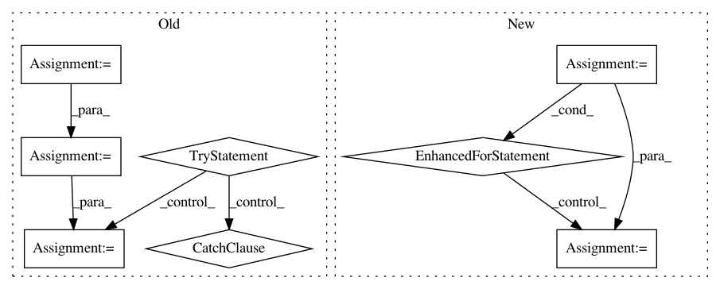

2c909f7d32128c29ff03da7713c3c7edfd91d785,debug_toolbar/panels/sql.py,,reformat_sql,#,127
Before Change
def reformat_sql(sql):
sql = sql.replace(",", ", ")
sql = sql.replace("SELECT ", "SELECT\n\t")
sql = sql.replace(" FROM ", "\nFROM\n\t")
sql = sql.replace(" WHERE ", "\nWHERE\n\t")
sql = sql.replace(" INNER JOIN", "\n\tINNER JOIN")
sql = sql.replace(" LEFT OUTER JOIN" , "\n\tLEFT OUTER JOIN")
sql = sql.replace(" ORDER BY ", "\nORDER BY\n\t")
sql = sql.replace(" HAVING ", "\nHAVING\n\t")
sql = sql.replace(" GROUP BY ", "\nGROUP BY\n\t")
// Use Pygments to highlight SQL if it"s available
try:
from pygments import highlight
from pygments.lexers import SqlLexer
from pygments.formatters import HtmlFormatter
sql = highlight(sql, SqlLexer(), HtmlFormatter())
except ImportError:
pass
return sql
After Change
return (td.seconds * 1000) + (td.microseconds / 1000.0)
def reformat_sql(sql):
for kwd in SQL_KEYWORDS:
sql = sql.replace(kwd, "<strong>%s</strong>" % (kwd,))
return sql
In pattern: SUPERPATTERN
Frequency: 3
Non-data size: 8
Instances
Project Name: jazzband/django-debug-toolbar
Commit Name: 2c909f7d32128c29ff03da7713c3c7edfd91d785
Time: 2009-08-28
Author: rob@cogit8.org
File Name: debug_toolbar/panels/sql.py
Class Name:
Method Name: reformat_sql
Project Name: nilmtk/nilmtk
Commit Name: 88301fe1d78eb7be67e8f201e230f0e5c9fe67db
Time: 2014-07-10
Author: jack-list@xlk.org.uk
File Name: nilmtk/metrics.py
Class Name:
Method Name: mean_normalized_error_power
Project Name: luispedro/mahotas
Commit Name: 64624fb2b46a228fef1141e1ded84e52acccaf6e
Time: 2015-06-09
Author: luis@luispedro.org
File Name: bin/mahotas-features.py
Class Name:
Method Name: main